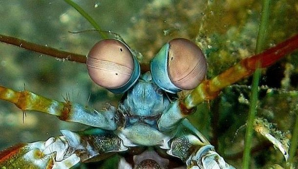
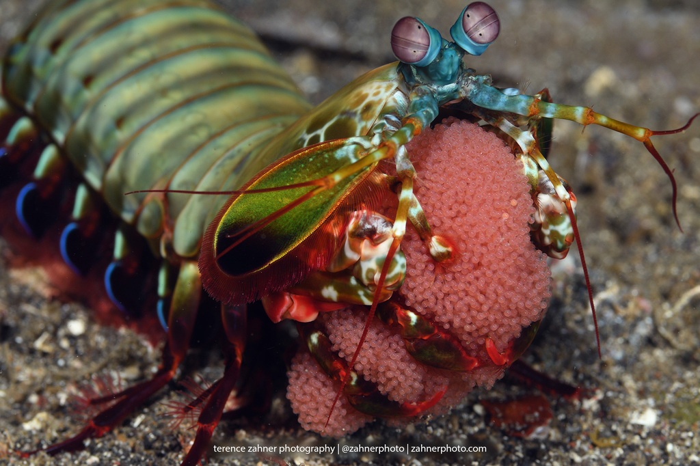
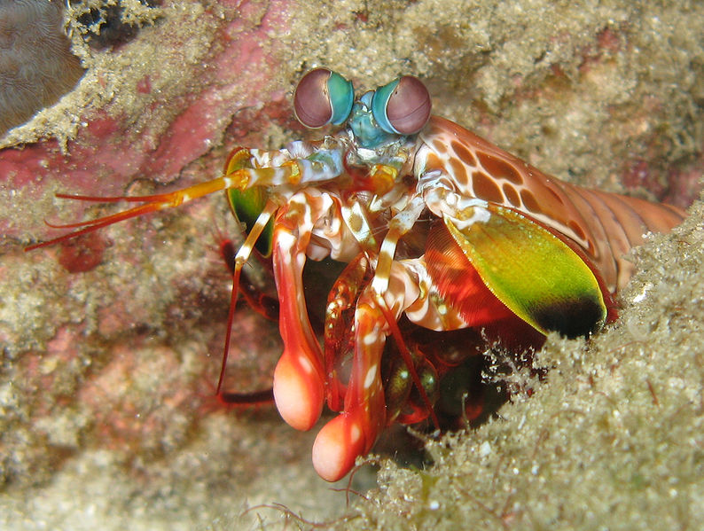

Fatos sobre o Stomatopoda
Stomatopoda (ou estomatópode), chamados popularmente de tamarutacas ou de lacraias-do-mar no Brasil, é uma ordem de crustáceos marinhos da subclasse Hoplocarida, que agrupa cerca de 400 espécies, caracterizadas principalmente pela morfologia da segunda pata torácica, que é modificada em apêndice subquelado, lembrando uma pata de louva-a-deus.[2]
O que são? Onde vivem? Do que se alimentam?
Os estomatópodes são predadores ativos que caçam presas com o auxílio de um sentido de visão muito apurado e capaz de interpretar polarização no espectro ultravioleta e infravermelho. Apresentam uma grande variação de tamanho, que pode ir de poucos milímetros até aproximadamente 40 cm nas espécies maiores. Eles vivem em fundo consolidado, lodoso ou ainda arenoso, onde cavam seus buracos ou aproveitam-se dos orifícios deixados por outros animais para neles se instalar. São animais exclusivamente carnívoros, alimentando-se de camarões, caranguejos, moluscos, peixes e até mesmo outros da mesma ordem. O segundo par de patas, muito desenvolvido, é usado tanto para atacar a presa como para se defender. O urópodo, quando aberto, também funciona para defesa, como um escudo, fechando a galeria em que o animal esteja instalado. A fêmea desova no local onde se abriga e, em caso de perigo, enrola os ovos como uma bola, prendendo-os junto ao corpo até encontrar um abrigo mais protegido.
Odontodactylus scyllarus podem ser encontrados em quase todo o litoral brasileiro, mas não são animais fáceis de se observar pelos seus hábitos mais furtivos. Devem ser manuseados com muita cautela pois são animais preparados para se defender com força, caso sejam incomodados.
Sua visão
A tamarutaca-pavão também possui um magnífico sistema visual. Seus olhos compostos são divididos em um hemisfério superior e um inferior separados por uma faixa de seis linhas de omatídios (os pequenos olhos que formam o olho composto) aumentados. Estas três regiões do olho são usadas para detectar diferentes comprimentos de onda, incluindo luz ultravioleta, e incluem até mesmo células especiais que convertem luz não-polarizada em luz polarizada, permitindo que a tamarutaca detecte luz de diferentes formas a partir de diferentes partes do olho. Este complexo sistema vem sendo estudado para o desenvolvimento de dispositivos ópticos para armazenar e ler informação.
Animal que da soco?
Excelente golpeador, o tamarutaca "soca" suas presas com suas garras com uma força de até 2,5 mil vezes seu peso em menos de 800 microsegundos. Este nocaute equivale a um tiro de pistola calibre 22.
Mais curiosidades sobre esse bichinho:
-

- Seus membros são tão poderosos que os cientistas estão estudando a estrutura de suas células para desenvolver novas armaduras para as tropas de combate;
- A Força Aérea norte-americana “encomendou” uma pesquisa para o desenvolvimento de aeronaves militares mais resistentes com base no revestimento das patas golpeadoras do mantis;
- Existem estudos baseados na visão superpoderosa das tamarutacas para melhorar os componentes ópticos — como os dos leitores de CD e DVD, por exemplo — utilizados atualmente.